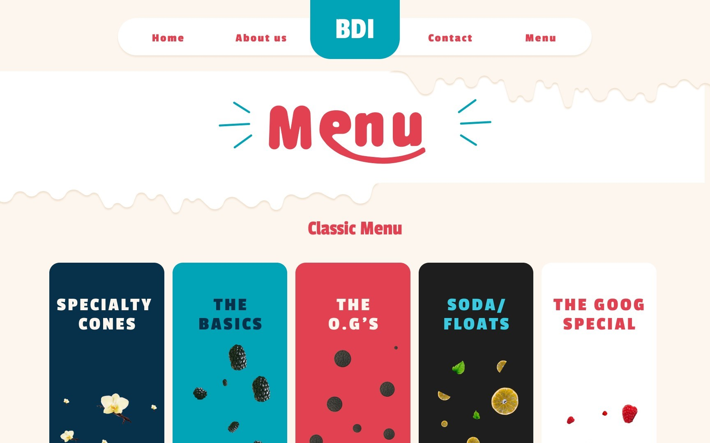
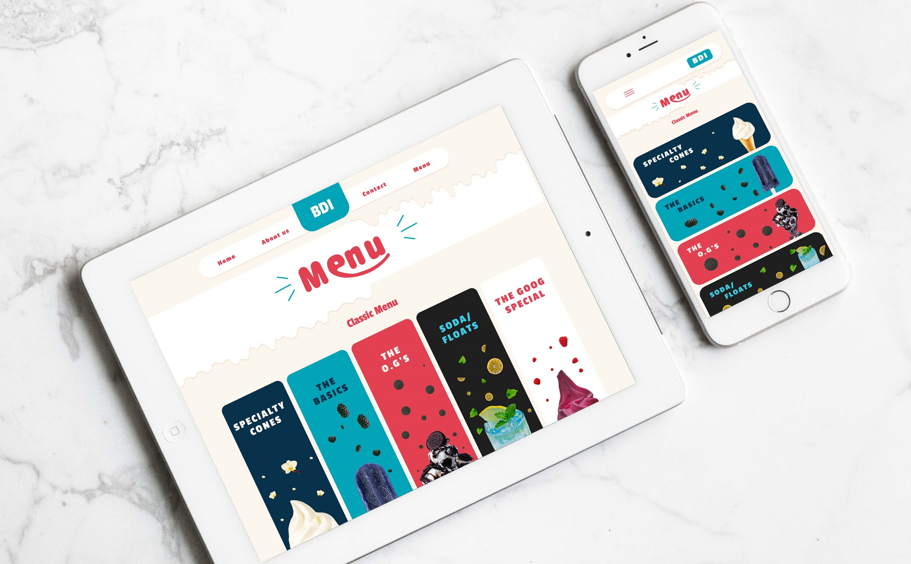

As part of my college coursework in the Web Development and UI/UX Design program at Red River College, I undertook a comprehensive website redesign project aimed at modernizing and enhancing the user experience of a popular ice cream company’s website. This project involved a blend of creative design principles and practical web development skills, ultimately resulting in a refreshed, user-friendly, and visually appealing website.
The primary objectives of the website redesign were to significantly improve user experience by streamlining navigation and enhancing usability, ensuring that visitors could easily find information and engage with the content. Modernizing the visual design was also a key goal, updating the website's aesthetics to reflect contemporary design trends and the brand's vibrant personality. Additionally, we aimed to enhance accessibility, making sure the website was usable by all individuals, including those with disabilities, by adhering to WCAG guidelines. Finally, optimizing performance was essential, focusing on improving website load times and ensuring responsiveness across various devices and screen sizes.

Process
The redesign process was structured into several key phases. Initially, we conducted a thorough analysis of the existing website to identify pain points and areas for improvement. This comprehensive analysis included user surveys, competitor analysis, and a detailed review of analytics data. Following this, we moved on to the design and prototyping phase, where we created wireframes and prototypes using Figma. Our focus was on developing intuitive navigation, clear call-to-actions, and a visually cohesive design language. Special emphasis was placed on color theory, typography, and imagery to ensure alignment with the brand’s identity.

The redesigned website successfully achieved the project’s objectives, resulting in enhanced user satisfaction with improved navigation and user experience. Engagement metrics increased, showing longer session durations and lower bounce rates. The design achieved brand consistency and improved accessibility, making the website more inclusive. This project allowed me to apply my UI/UX design, web development, and user research skills, enhancing my ability to deliver high-quality, user-centric web solutions.